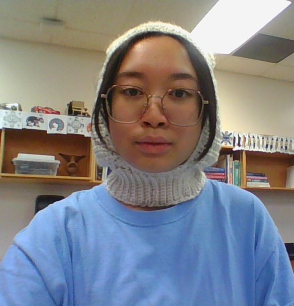

Francesca Olaer

Qualifications Summary
Motivated and organized high school student with a strong foundation in problem-solving, critical thinking,
and collaboration. Demonstrates responsibility, attention to detail, and the ability to manage multiple tasks
effectively. Eager to contribute to academic and technical projects, particularly in computer science, while
applying strong analytical and programming skills.
Skills
- Trilingual (French, English, Tagalog)
- Competent in Python
- Beginner proficiency in Java
- High WPM; 100
- Organized
- Detail oriented
- Proficient in designing using Canva
Education
- Archbishop Carney Regional Secondary Highschool (2020-2025)
- British Columbia Institute of Technology (2025-2027) - Fullstack Web Development Diploma
- Simon Fraser University (2030-2034) - Bachelor of Science, Interactive Arts and Technology
Work Experience
Awards
- Academics Award (2019-2020)
- Principal’s List (2020-2021)
- Top Student in Science (2020-2021)
- Lead Learner Award for Computer Science 11 (2023 - 2024)
Other